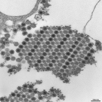
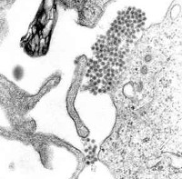

Aedes Albopictus - Asian Tiger Mosquito
Aedes Albopictus, the Asian Tiger Mosquito, is a mosquito native to the tropical and subtropical areas of Southeast Asia; however, in the past couple of decades this species has spread to many countries through the transport of goods and international travel. European countries where existence of this mosquito is confirmed are:
Tiger mosquito is characterized by its black and white striped legs, and small black and white striped body. The insect is called a tiger mosquito for its striped appearance. This mosquito has become a significant pest in many communities because it closely associates with humans (rather than living in wetlands), and typically flies and feeds in the daytime in addition to at dusk and dawn [1]. |
Diseases spreading byAedes Albopictus are:
|
Chikungunya is a virus transmitted to people by mosquitoes. Outbreaks have occurred in countries in Africa, Asia, Europe, and the Indian and Pacific Oceans. In late 2013, chikungunya virus was found for the first time in the Americas on islands in the Caribbean. There is a risk that the virus will be imported to new areas by infected travelers. There is no vaccine to prevent or medicine to treat chikungunya virus infection. Travelers can protect themselves by preventing mosquito bites. When traveling to countries with chikungunya virus, use insect repellent, wear long sleeves and pants, and stay in places with air conditioning or that use window and door screens. The most common symptoms of chikungunya infection are fever and joint pain. Other symptoms: headache, muscle pain, joint swelling or rash. Most people infected with chikungunya virus develop some symptoms - usually after 3 to 7 days after being bitten. Chikungunya symptoms can be severe and disabling. Most patients feel better within a week but some people may have joint pain for months. The people at risk are newborns, elders and people with cardiovascular diseases. After infection there is very high possibility that infected person will be protected from the future infections. Diagnosis of chikungunya takes into account the following factors:
Treatment of chikungunya infection is based on the treating of the symptoms by rest, drinking fluids to prevent dehydration and taking medicines provided by your doctor. Prevention. There is no vaccacine for chikungunya. The best way to to be healthy is to avoid mosquitoes which are spreading disease. To do that:
Important links: Text above is based on the information from CDC: Chikungunya virus The medical information on our website is provided without any representations or warranties, express or implied. You must rely only on the medical advice from your doctor. |
Dengue is a disease caused by any one of four closely related dengue viruses (DENV 1, DENV 2, DENV 3, or DENV 4). The viruses are transmitted to humans by the bite of an infected mosquito. In the Western Hemisphere, the Aedes aegypti mosquito is the most important transmitter or vector of dengue viruses, although a 2001 outbreak in Hawaii was transmitted by Aedes albopictus. It is estimated that there are over 100 million cases of dengue worldwide each year. The typical symptoms of dengue infection are high fever, severe hradache, severe pain behind the eyes, joint pain, muscle and bone pain, rash, mild bleeding. Young children and people with the first dengue infection have a milder illness. Symptoms of more dangerous type of dengue fever (Dengue hemorrhagic fever) are similar to these from dengue fever. DHF starts with the fever which is 2 to 7 days long. When it declines symptoms like persistent vomitting, abdominal pain and difficulty in breathing may occur. This marks the beginning of a 24- to 48-hour period when the smallest blood vessels (capillaries) become excessively permeable (“leaky”), allowing the fluid component to escape from the blood vessels into the peritoneum (causing ascites) and pleural cavity (leading to pleural effusions). This may lead to failure of the circulatory system and shock, followed by death, if circulatory failure is not corrected. In addition, the patient with DHF has a low platelet count and hemorrhagic manifestations, tendency to bruise easily or other types of skin hemorrhages, bleeding nose or gums, and possibly internal bleeding. Diagnosis of dengue takes into account the following factors:
Treatment of dengue infection is based on the treating of the symptoms by rest, drinking fluids to prevent dehydration and taking medicines (pain relievers) provided by your doctor. Proper medical attention decreasing mortality rate from 20% to 1%. Prevention. In late 2015 and early 2016, the first dengue vaccine, Dengvaxia (CYD-TDV) by Sanofi Pasteur, was registered in several countries for use in individuals 9-45 years of age living in endemic areas. The Strategic Advisory Group of Experts (SAGE) on immunization reviewed CYD-TDV in April 2016 and recommended countries consider introduction of the vaccine in geographic settings (national or subnational) with high endemicity. A WHO Vaccine Position Paper will be published outlining WHO recommendations in July 2016. The other way to to be healthy is to avoid mosquitoes which are spreading disease. To do that:
Important links:
Text above is based on the information from CDC: Dengue virus, Frequently Asked Questions and WHO: Dengue virus The medical information on our website is provided without any representations or warranties, express or implied. You must rely only on the medical advice from your doctor. |
Data about Aedes Albopictus mosquito occurence is based on the information from Wikipedia page [1]. The data are divided into two indicators: [1] - risk region [0] - secure region. The data was created based on the maps and descriptions from the corresponding Wikipedia’s websites. (See data access and policies). |
Data access and policies: The data is avaible on the webpage: [1]. This data may be shared and adapted for any purpose with appriopriate credit and on the same license as metadata. More information: https://creativecommons.org/licenses/by-sa/3.0/. |